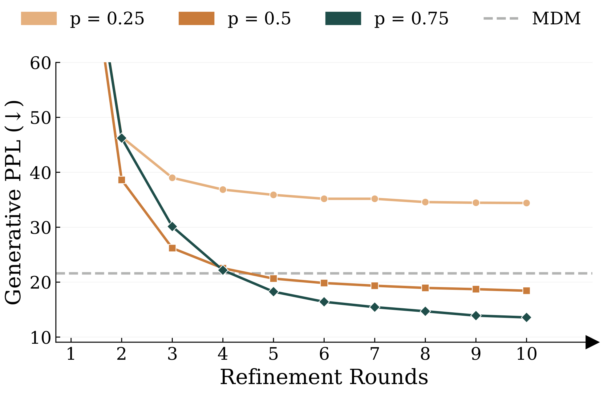
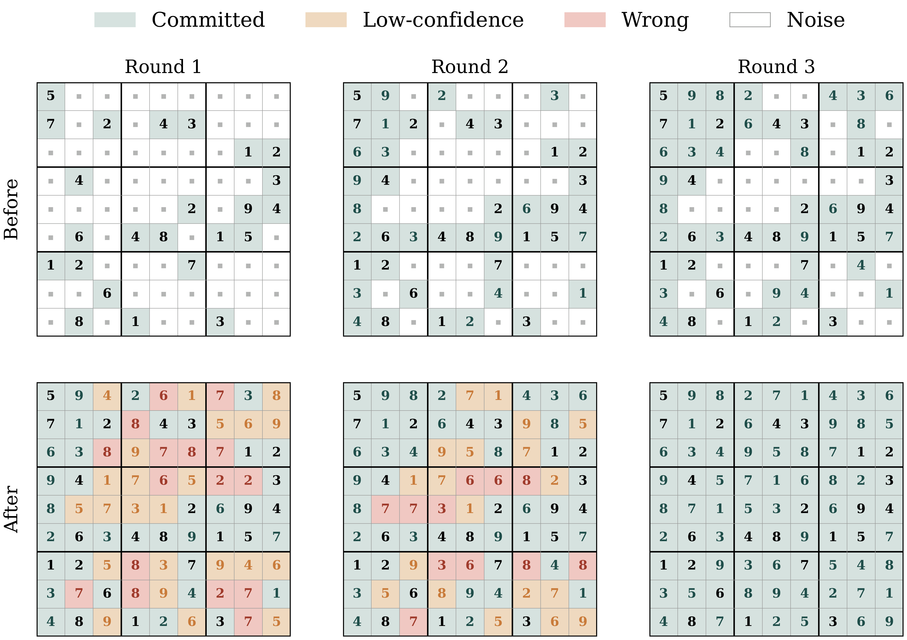
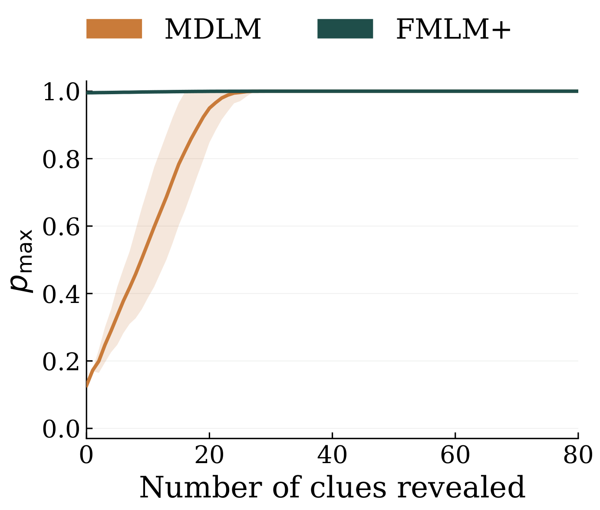
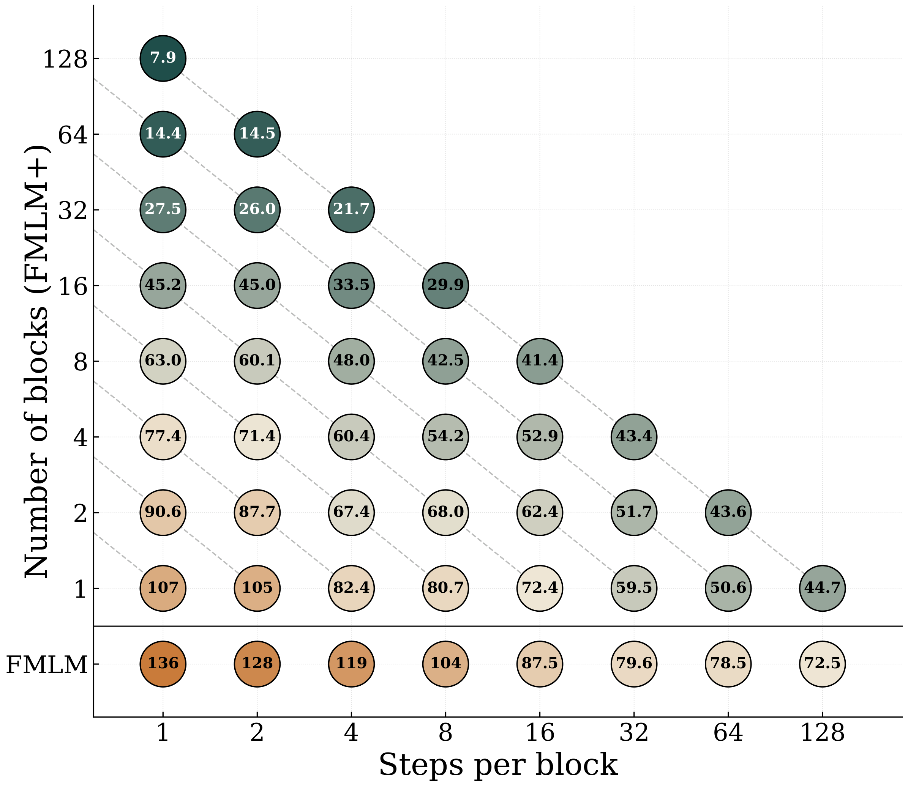
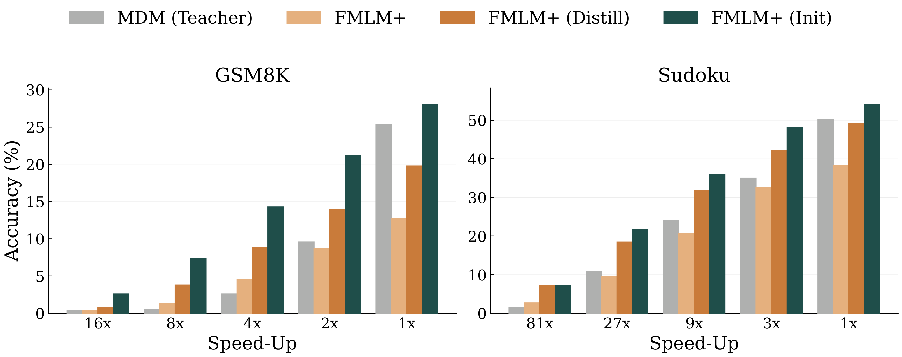

Masked diffusion models decide how confidently to commit each token a priori — before seeing the rest of the sequence — and cannot fix mistakes that only become visible once a full draft exists. We introduce Posterior Refinement, an inference strategy built on Flow Map Language Models (FMLM+) that scores tokens a posteriori: it generates a complete draft in a single forward pass, then re-noises and regenerates only the low-confidence tokens. This lets the model self-correct in parallel, matching or surpassing the strongest baselines with up to 25× fewer function evaluations.

Non-autoregressive language models based on masked diffusion (MDMs) generate text through iterative unmasking, with quality controlled by how confidently each token is committed. Existing confidence-based decoding estimates this confidence a priori — conditioning only on noise and context — and must therefore commit tokens before knowing whether they are globally consistent with the rest of the sequence. We identify this as a fundamental limitation: a-priori confidence cannot detect errors that only become apparent in light of the full generated sequence, and because MDMs factorize token posteriors independently, they cannot in principle recover from such errors without expensive re-sampling from scratch.
We introduce Posterior Refinement, a decoding strategy that instead scores tokens a posteriori — after generating a complete draft sequence — and selectively re-generates only those tokens whose probability mass falls below a confidence threshold given the full context. This capability requires a model that jointly represents all token positions under a shared generative trajectory, which MDMs cannot provide. We show that Posterior Refinement is naturally enabled by the Flow Map Language Model (FMLM+) framework, which learns a continuous transport over the full sequence and thereby exposes a well-defined posterior confidence for each token conditioned on the entire draft. On structured generation benchmarks, Posterior Refinement achieves up to 25× fewer function evaluations than MDM sampling at matched quality.

Posterior Refinement lets FMLM+ judge the fit of each token after the fact and fix its own mistakes in parallel. Starting from a single-pass draft, the model decodes every position, scores each token's posterior probability given the entire draft, and commits only the high-confidence tokens (committed). The remaining low-confidence () and incorrect () tokens are re-noised () and regenerated in the next round, now conditioned on the tokens just committed. Over a handful of rounds, the committed region grows until the puzzle is solved — each round only a single function evaluation.
Masked diffusion models predict only token-wise marginal posteriors. To decide which tokens to keep, they estimate confidence a priori — from noise and context alone, before a full sequence exists. This is fundamentally limited: a token that looks confident in isolation may be globally inconsistent, and because MDM posteriors factorize independently, the model cannot recover from such an error without re-sampling from scratch.
Key idea. Because FMLM+ transports the entire sequence jointly under a shared flow, it exposes a well-defined posterior confidence for every token given the full draft — exactly the signal a factorized MDM cannot provide. Posterior Refinement turns this signal into a self-correction loop.

FMLM+ generalizes Flow Map Language Models by lifting the single global diffusion time to a per-token time vector t = (t1, …, tL). Pinning tl = 1 freezes a position at its clean value to act as conditioning context, while tl < 1 leaves it noised. This inherits the few-step efficiency of FMLM and the any-order inference flexibility of MDMs — recovering parallel, block-diffusion, and confidence-based sampling as special cases — without any architectural changes for conditioning.
Each round costs a single function evaluation: generate a full draft, keep the tokens whose posterior probability exceeds the threshold p, and re-noise the rest for the next round. Lower p commits faster (fewer rounds, lower quality); higher p is more conservative and converges to higher quality.
Posterior Refinement delivers large efficiency gains across all four benchmarks. On Sudoku, FMLM+ (PR) reaches 96.8 / 90.9 / 70.6 (Easy/Med./Hard) at just 5 NFEs — surpassing every baseline evaluated at 128 NFEs. On TinyStories, 16 NFEs reach generative perplexity 9.88, nearly matching autoregressive sampling (8.89 at 128 NFEs) and outperforming every diffusion baseline by a wide margin. On GSM8K, FMLM+ (PR) reaches 19.2% zero-shot accuracy — a 3× improvement over the base FMLM+ model at 8× fewer evaluations.
| Method | TinyStories | OpenWebText | ||||
|---|---|---|---|---|---|---|
| NFE | Gen. PPL ↓ | Entropy ↑ | NFE | Gen. PPL ↓ | Entropy ↑ | |
| Autoregressive | ||||||
| Sample | 128 | 8.89 | 4.01 | 1024 | 35.45 | 5.58 |
| Greedy | 128 | 5.34 | 4.06 | 1024 | 1.07 | 1.65 |
| Discrete Diffusion | ||||||
| MDLM | 128 | 18.74 | 4.03 | 1024 | 105.15 | 5.63 |
| Duo | 128 | 22.73 | 4.05 | 1024 | 77.69 | 5.55 |
| Continuous Diffusion | ||||||
| CANDI | 128 | 46.32 | 4.04 | 1024 | 143.13 | 5.71 |
| FLM | 128 | 57.50 | 4.17 | 1024 | 62.23 | 5.33 |
| S-FLM | 128 | 95.25 | 4.08 | 1024 | 123.87 | 5.52 |
| FMLM+ | 128 | 36.40 | 4.11 | 1024 | — | — |
| FMLM+ (PR) | 16 | 9.88 | 3.87 | 16 | — | — |
| Method | Sudoku | GSM8K | ||||
|---|---|---|---|---|---|---|
| NFE | Easy | Med. | Hard | NFE | Acc. (%) | |
| Autoregressive | ||||||
| Sample | 128 | 13.9 | 5.1 | 0.6 | 512 | 53.9 |
| Greedy | 128 | 14.6 | 5.1 | 1.0 | 512 | 63.3 |
| Discrete Diffusion | ||||||
| MDLM | 128 | 92.0 | 77.1 | 30.2 | 1024 | 18.0 |
| Duo | 128 | 96.3 | 84.7 | 58.4 | 1024 | 17.2 |
| Continuous Diffusion | ||||||
| CANDI | 128 | 79.3 | 45.9 | 16.7 | 1024 | 0.2 |
| FLM | 128 | 94.2 | 82.7 | 44.5 | 1024 | 0.3 |
| S-FLM | 128 | 94.8 | 85.2 | 45.0 | 1024 | 18.0 |
| FMLM+ | 128 | 90.2 | 72.8 | 37.2 | 1024 | 6.0 |
| FMLM+ (PR) | 5 | 96.8 | 90.9 | 70.6 | 128 | 19.2 |
Baselines run at up to 1024 NFEs; FMLM+ (PR) matches or surpasses them with 8–25× fewer function evaluations. (OpenWebText PR result pending final checkpoint.)
Where FMLM's single global time admits only a one-dimensional trade-off in the number of steps, FMLM+ opens a two-dimensional plane over block size and steps-per-block, recovering FMLM as a special case. At matched compute, spending the budget on smaller sequential blocks rather than more steps within a single block substantially improves quality — reaching generative perplexity 8 versus 73 at 128 NFEs on TinyStories.

Masked diffusion arises as the boundary of the FMLM+ training objective. This correspondence makes the growing pool of pretrained MDMs directly usable to accelerate FMLM+ training, via either distillation or direct warm-starting. Warm-starting from a pretrained MDLM, FMLM+ (Init), performs best across all NFE budgets — with its largest margins in the few-step regime, evidence that FMLM+ is less susceptible than MDLM to the factorization error of parallel decoding.

| Method | Sudoku (NFE) | GSM8K (NFE) | ||||||||
|---|---|---|---|---|---|---|---|---|---|---|
| 1 | 3 | 9 | 27 | 81 | 32 | 64 | 128 | 256 | 512 | |
| MDLM | 1.5 | 10.9 | 24.1 | 35.0 | 50.1 | 0.4 | 0.5 | 2.6 | 9.6 | 25.3 |
| FMLM+ | 2.7 | 9.6 | 20.7 | 32.6 | 38.3 | 0.4 | 1.3 | 4.6 | 8.7 | 12.7 |
| FMLM+ (Distill) | 7.2 | 18.5 | 31.8 | 42.2 | 49.1 | 0.8 | 3.8 | 8.9 | 13.9 | 19.8 |
| FMLM+ (Init) | 7.3 | 21.7 | 36.0 | 48.1 | 54.0 | 2.6 | 7.4 | 14.3 | 21.2 | 28.0 |
Solve-rate accuracy (%, ↑) on conditional Sudoku and zero-shot GSM8K under block-diffusion inference (NFE set by block size).
@article{agarwal2026posterior,
title={Posterior Refinement: Any-Order Language Generation via Flow Maps},
author={Manan Agarwal and Sheel Shah and Chanhyuk Lee
and Jaehoon Yoo and Jerry Huang and Seunghoon Hong
and Aditi Raghunathan and Jinwoo Kim and Nicholas M. Boffi},
journal={arXiv preprint},
year={2026},
}